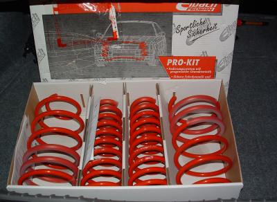
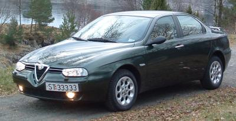
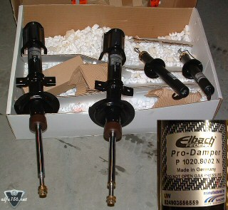
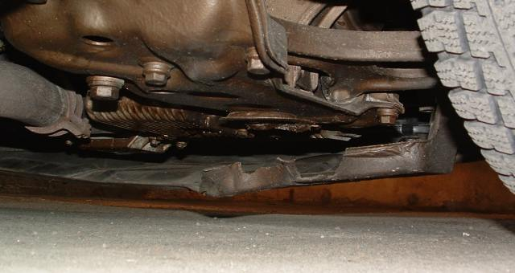

I have the Eibach pro kit with 30 mm progressive lowering springs and dampers. First I had only the springs and used the orignal standard dampers. The springs were not very hard, but they made the car roll less in sharp turns and it felt much more stable. The looks also improved a lot! But with the standard dampers, the ride becomes a bit bumpy as the dampers are not strong enough to hold the car steady in bumps. And also it made a bit of a bump noise when I drove over some bumps and my tires wore out very fast! But with the Eibach pro dampers, it made a big difference. The car is still not very hard, it actually feels more comfortable than with the standard dampers and Eibach springs. At the same time it feels more sporty and the steering is even sharper. This is a very much recommended upgrade for your car. It is not uncomfortable |
 |
